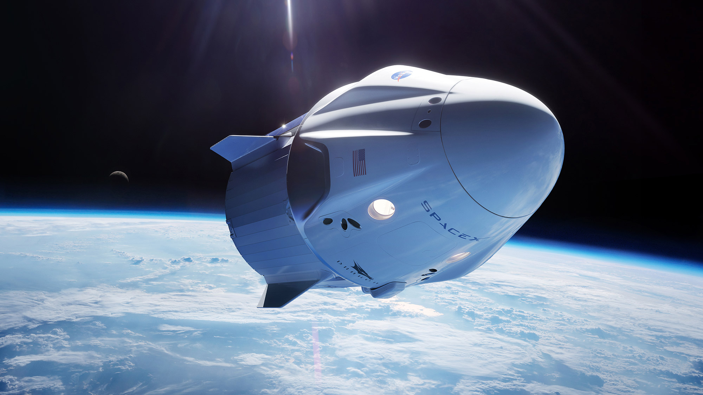

Latest missions
Starlink

On Thursday, January 6 at 4:49 p.m. EST, Falcon 9 launched 49 Starlink satellites to low Earth orbit from Launch Complex 39A (LC-39A) at Kennedy Space Center in Florida. This was the fourth launch and landing of this Falcon 9 first stage booster, which previously launched GPS III-4, GPS III-5, and Inspiration4.
SpaceX is targeting Thursday, February 3 for a Falcon 9 launch of 49 Starlink satellites to low Earth orbit from Launch Complex 39A (LC-39A) at Kennedy Space Center in Florida. The instantaneous launch window is at 1:13 p.m. EST (18:13 UTC), and a backup opportunity is available on Friday, February 4 at 12:51 p.m. EST (17:51 UTC).
The booster supporting this mission previously launched Crew-1, Crew-2, SXM-8, CRS-23, and IXPE. Following stage separation, SpaceX will land Falcon 9’s first stage on the A Shortfall of Gravitas droneship, which will be stationed in the Atlantic Ocean. One fairing half previously supported five Starlink missions, and the other half previously supported Transporter-1 and two Starlink missions.
A live webcast of this mission will begin about 15 minutes prior to liftoff. You can get the youtube live broadcast link here.
About Earth
Experience Earth’s wonders from space—from the Great Barrier Reef, Himalayas, Amazon River, and Giza’s Pyramids by day, to the glow of city lights, lightning storms, and the Aurora Borealis by night. Dragon fully orbits the Earth every 90 minutes, making a highly customized flight path possible. Fly over your hometown, famous landmarks and other places meaningful to you.
DIAMETER 12,742 km / 7,918 mi
MASS 5.9722×1024 kg
AGE 4.543 billion years
Cosmo-skymed second generation FM2 mission
On Monday, January 31 at 6:11 p.m. EST, Falcon 9 launched the COSMO-SkyMed Second Generation FM2 mission to low Earth orbit from Space Launch Complex 40 (SLC-40) at Cape Canaveral Space Force Station in Florida. This was the third launch and landing of this booster, which previously supported the launch of Arabsat-6A and STP-2.
"You want to wake up in the morning and think the future is going to be great - and that's what being a spacefaring civilization is all about. It's about believing in the future and thinking that the future will be better than the past. And i can't think of anything more exciting than going out there and being among the stars."
-Elon Musk
SpaceX Mission : Making Humanity Multiplanetary
Building on the achievements of Falcon 9 and Falcon Heavy, SpaceX is working on a next generation of fully reusable launch vehicles that will be the most powerful ever built, capable of carrying humans to Mars and other destinations in the solar system.
On Wednesday, May 5, Starship serial number 15 (SN15) successfully completed SpaceX's fifth high-altitude flight test to a Starship prototype from Starbase in Texas. Similar to previous high-altitude flights tests of Starship, SN15 was powered through ascent by three Raptor engines, each shutting down in sequence prior to the vehicle reaching apogee - approximately 10km in altitude. SN15 performed a propellant transition to the internal header tanks, which hold landing propellant, before reorienting itself for reentry and a controlled aerodynamic descent. The Starship prototype descended under active aerodynamic control, accomplished by independent movement of two forward and two aft flaps on the vehicle. All four flaps were actuated by an onboard flight computer to control Starship's attitude during flight and enabled precise landing at the intended location. SN15's Raptor engines reignited as the vehicle performed the landing flip maneuver immediately before touching down for a nominal landing on the pad.
These test flights of Starship are" all about improving our understanding and development of a fully reusable transportation system designed to carry both crew and cargo on long-duration interplanetary flights, and help humanity return to the Moon, and travel to Mars and beyond. Congratulations to the entire SpaceX team on SN15's successful flight and landing!
Dragon : Sending Humans and Cargo into Space
The Dragon spacecraft was named after the 1963 song "Puff, the Magic Dragon" by Peter, Paul and Mary, reportedly as a response to critics who considered his spaceflight project impossible.
SpaceX began developing the Dragon space capsule in late 2004, making a public announcement in 2006 with a plan of entering service in 2009. Also in 2006, SpaceX won a contract to use the dragon space capsule for commercial resupply services to theInternational Space Station for the American federal space agency, NASA. In 2005, NASA solicited proposals for a commercial ISS resupply cargo vehicle to replace the then-soon-to-be-retired Space Shuttle, through its Commercial Orbital Transportation Services (COTS) development program. The Dragon space capsule was a part of SpaceX's proposal, submitted to NASA in march 2006. SpaceX's COTS proposal was issued as a part of a team, which also included MD Robotics, the Canadian company that had built the ISS's Canadarm2. On 18 August 2006, NASA announced that SpaceX had been chosen, along with Kistler Aerospace, to develop cargo launch services for the ISS. The initial plan called for three demonstration flights of SpaceX's Dragon spacecraft to be conducted between 2008 and 2010. SpaceX and Kistler were to conceive up to US$278 million and US$207 million respectively, if they met all NASA milestones, but Kitsler failed to meet its obligations, and its contract was terminated in 2007. NASA later re-awarded contract to Orbital Sciences Corportaion.
Commercial Resupply Services Phase 1. On 23 December 2008, NASA awarded a US$1.6 billion Commercial Resupply Services(CRS-1) contract to spaceX, with contract options that could potentially increase the maximum contract value to US$3.1 billion. The contract called for 12 flights, with an overall minimum of 20,000 kilograms (44,000 lb) of cargo to be carried to the ISS. On 23 february 2009, SpaceX announced that its chosen phenolic-impregnated carbon ablator heat shield material, PICA-X, had passed heat stress tests in preparation for Dragon's maiden launch. The primary proximity-operations sensor for the Dragon spacecraft, the DragonEye, was tested in early 2009 during the STS-127 mission, when it was mounted near the docking port of the Space Shuttle Endeavour and used while the Shuttle approached the International Space Station. The DragonEye's lidar and thermography (thermal imaging) abilities were both tested successfully. The COTS UHF Communication Unit (CUCU) and Crew Command Panel (CCP) were delivered to the ISS during the late 2009 STS-129 mission. The CUCU allows the ISS to communicate with Dragon and the CCp allows ISS crew members to issue basic commands to Dragon. In summer 2009,SpaceX hired former NASA astronaut Ken Bowersox as vice president of their new Astronaut Safety and Mission Assurance Department, in preparation for crews using the spacecraft.
Returning research materials from orbit. Dragon spacecraft can return 3,500 kilograms (7,700 lb) of cargo to Earth, which can be all unpressurized disposal mass, or up to 3,000 kilograms (6,600 lb) of pressurized cargo, from the ISS, and is the only current spacecraft of returning to Earth with a significant amount of cargo. Other than the Russian Soyuz crew capsule, Dragon is the only currently operating spacecraft designed to survive re-entry. Because Dragon allows for the return of critical materials to researchers in as little as 48 hours from spalshdown, it opens the possibility of new experiments on ISS that can produce materials for later analysis on ground using more sophisticated instrumentation. For example, CRS-12 returned mice that have spent time in orbit which will help give insight into how microgravity impacts blood vessels in both the brain and eyes, and in determining how arhritis develops.
Operational flights. Dragon was launched on its first operational CRS flight on 8 October 2012, and completed the mission successfully on 28 October 2012. NASA initially contracted SpaceX for 12 operational missions, and later extended the CRS contract with 8 more flights, bringing the total to 20 lauch until 2019. In 2016, anew batch of 6 missions under the CRS-2 contract was assigned to SpaceX; those missions are scheduled to be launched between 2020 and 2014.
The SpaceX Dragon, also known as Dragon 1 or Cargo Dragon, was a class of partially reusable cargo spacecraft. Dragon was launched into orbit by the company's Falcon 9 launch vehicle to resupply the International Space Station (ISS). During its maiden flight in December 2010, Dragon became the first commercially built and operated spacecraft to be recovered successfully from orbit. On may 2012, a cargo variant of Dragon became the first commercial spacecraft to successfully rendez-vous with and attach to the ISS. SpaceX is contracted to deliver cargo to the ISS under NASA's Commercial Resupply Services program, and Dragon began regular cargo flights in October 2012.With the Dragon spacecraft and the Orbital ATK Cygnus, NASA seeks to increase its partnerships with domestic commercial aviation and aeronautics industry. On 3 June 2017, the C106 capsule, largely assembled from previously flown components from the CRS-4 mission in September 2014, was launched again for the first time on CRS-11, with the hull, structural elements,thrusters, harnesses, propellant tanks, plumbing and many of the avionics reused, while the heat shield, batteries and components exposed to sea water upon slpashdown for recovery were replaced.
Crewed Development program. In 2006, Elon Musk stated that SpaceX had built "a prototype flight crew capsule, including a thoroughly tested 30-man-day-life-support system". A video simulation of the launch escape system's operation was released in January 2011. Musk stated in 2010 that the develomental cost of a crewed Dragon and Falcon 9 would be between US$800 million and US$1 billion. In 2009 and 2010, Musk suggested on several occasions that plans for a crewed variant of the Dragon were proceeding and had a two-to-three-year timeline to completion. SpaceX submitted a bid for the third phase of CCDev, CCiCap.
SpaceX developed a second version called Dragon 2, which is capable of transporting humans. Flight testing was completed in 2019, after a delay caused by a test pad anomaly in April 2019, which resulted in the loss of a Dragon 2 capsule. The first flight of astronauts on Dragon 2 occured on the Crew Dragon Demo-2 mission in May 2020. The last flight of the first version of the Dragon spacecraft (Dragon 1) launched 7 March 2020 (UTC); it was a cargo resupply mission (CR-20) to International Space Station (ISS). This mission was the last mission of SpaceX of the first Commercial Resupply Services (CRS-1) program, and marked the retirement of the Dragon 1 fleet. Further SpaceX commercial resupply flights to ISS under the second Commercial Resupply Services (CRS-2) program use the cargo-carrying variant of the SpaceX Dragon 2 spacecraft.
Dragon 2 has two variants: Crew Dragon, a spacecraft capable of ferrying up to seven crew, and Cargo Dragon, an updated replacement for the original Dragon 1. The spacecraft consists of a reusable space capsule and an expendable trunk module. The spacecraft launches atop a Falcon 9 Block 5 rocket and the capsule returns to Earth via splashdown. Four operational Dragon 2 spacecraft have been manufactured. Cargo Dragon supplies cargo to the ISS under a Commercial Resupply Services-2 contract with NASA. The first flight of Dragon 2 in a cargo configuration launched in December 2020. It shares this duty with Northrop Grumman Innovation Systems Cygnus spacecraft, and Sierra Nevada Corporation's Dream Chaser spacecraft is expected to join them no earlier than June 2022. As of 2012, Crew Dragon is the only U.S human-rate orbital transport spacecraft, the only reusable crewed spacecraft and the only reusable cargo spacecraft currently in operation. Its primary role is to transport crews to and form the ISS under NASA's Commercial Crew Program, succeeding the crew orbital transportation capabilities of the Space Shuttle which retired from service in 2011. No earlier than June 2022 it will be joined by Boeing Starliner in this role. Crew Dragon is also used for non-docking orbital space tourism, and is expected to be used to shuttle tourists to and from Axiom Space's planned space station.
The dragon spacecraft is capable of carrying up to 7 passengers to and from Earth orbit, and beyond. It is the only spacecraft currently flying that is capable of returning significant amounts of cargo to Earth, and is the first private spacecraft to take humans to the space station.
Human Spaceflight : Making life Multiplanetary, taking humans to space.
Crew Dragon
Crew dragon incorporates an integrated pusher launch escape system consisting of eight SuperDraco engines, capable of accelerating the vehicle away from the rocket in an emergency.SpaceX originally intended to land Crew Dragon on land using the SuperDraco engines, with parachutes and an ocean splashdown available in the case of an aborted launch. Precision water landing under parachutes was proposed to NASA as "the baseline return and recovery approach for the first few flights" of Crew Dragon. Propulsive landing was later cancelled, leaving ocean splashdown under parachutes as the only option. Paragon Space Development Corporation assisted in developing Crew Dragon's life-support system.
In 2012, SpaceX was in talks with Orbital Outfitters about developing space suits to wear during launch and re-entry. Each crew member wears a custom space suit fitted for them. The suit is primarly designed for use inside the Dragon (IVA type suit), howeveer, in the case of a rapid cabin depressurization, the suit can protect the crew members. The suit can also provide cooling for astronauts during normal flight. For the demo-1 mission, a test dummy nicknamed Ripley was fitted with the spacesuit and sensors. The spacesuit is made from Nomex, a fire retardant fabric similar to Kevlar.
The spacecraft's design was unveiled on 29 May 2014, during a press event at SpaceX headquarters in Hawthorne, California. In October 2014, NASA selected the Dragon spacecraft as one of the candidates to fly American astronauts to the International Space Station, under the Commercial Crew Program. In case of private astronauts riding on Crew Dragon, SpaceX gives them Crew Dragon Astronaut Wings.
Crewed flights
Dragon is intended to fulfill a set of requirements that will make the capsule useful to both commercial and government customers. SpaceX and Bigelow Aerospace were working together to support round-trip transport of commercial passengers to low Earth orbit (LEO) destinations, but the plan was canceled. Instead Axiom plans to launch tourists to the Space Station and eventually their own private space station. NASA flights to the ISS will only have four astronauts, with the added payload mass and volume used to carry pressurized cargo. On 16 September 2014, NASA announced that SpaceX and Boeing had been selected to provide crew transportation to the ISS. SpaceX will receive US$2.6 billion under this contract. Dragon was the less expensive proposal, but NASA's William H. Gerstenmaier considered the CST-100 proposal the stronger of the two. However, Crew Dragon's first operational flight, SpaceX Crew-1, was on 16 November 2020 after several test flights while the CST-100 suffered several problems and delays, with its first operational flight slipped to no earlier than March 2023.
In a departure from the prior NASA practice, where construction contracts with commercial firms led to direct NASA operation of the spacecraft, NASA is purchasing space transport services from SPaceX, including construction, launch, and operation of the Dragon 2. In August 2018, NASA and SpaceX agreed on the loading procedures for propellants, vehicule fluids and crew. High-pressure helium will be loaded first, followed by the passengers approximately two hours prior to scheduled launch; the ground crew will then depart the launch pad and move to a safe distance. The launch escape system will be activated approximately 40 minutes prior to launch, with propellant loading commencing several minutes later. The first automated test mission launched to the International Space Station (ISS) on 2 March 2019. After schedule slips, the first crewed flight launched on 30 May 2020 with the launch of the Demo-2 mission.
In June 2019, Bigelow Space Operations announced it had reserved with SpaceX up to four missions of four passengers each to ISS as early as 2020 and planned to sell them for around US$52 million per seat. These plans were canceled by September 2019. on 18 february 2020, building on development for NASA's commercial crew program, Space Adventures announced an agreement with SpaceX to fly up to four paying space tourists on a standalone mission aboard a Crew Dragon spacecraft in late 2012 or 2022 that could reach an altitude two-to-three times giher than the International Space Station. However, by October 2021, the contract had expired, but the compary left open the possibility of a future mission.